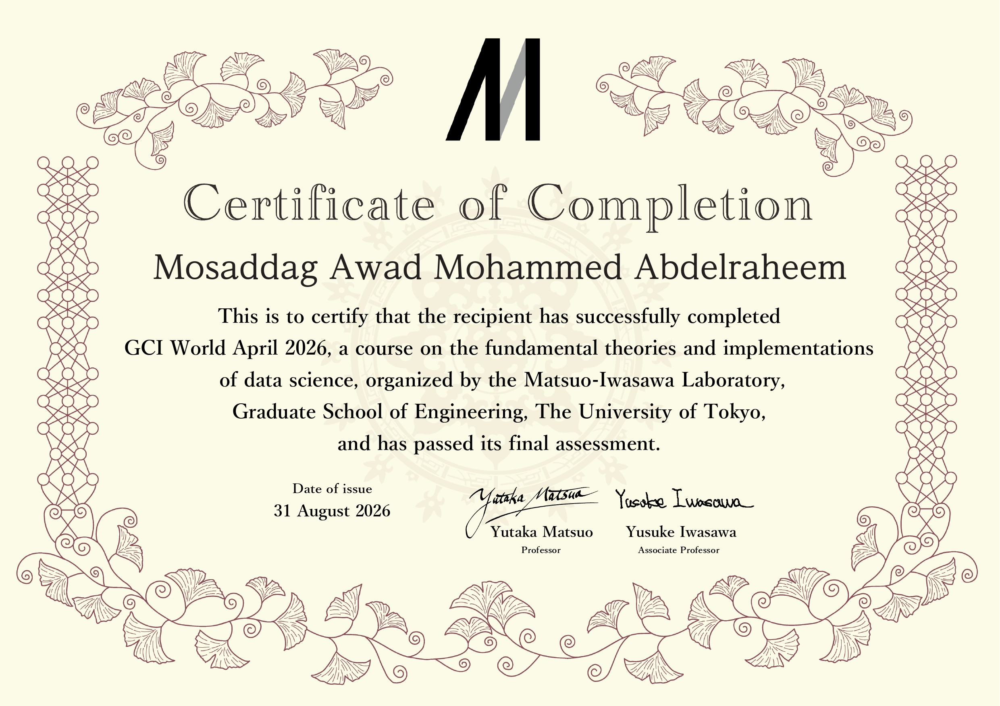
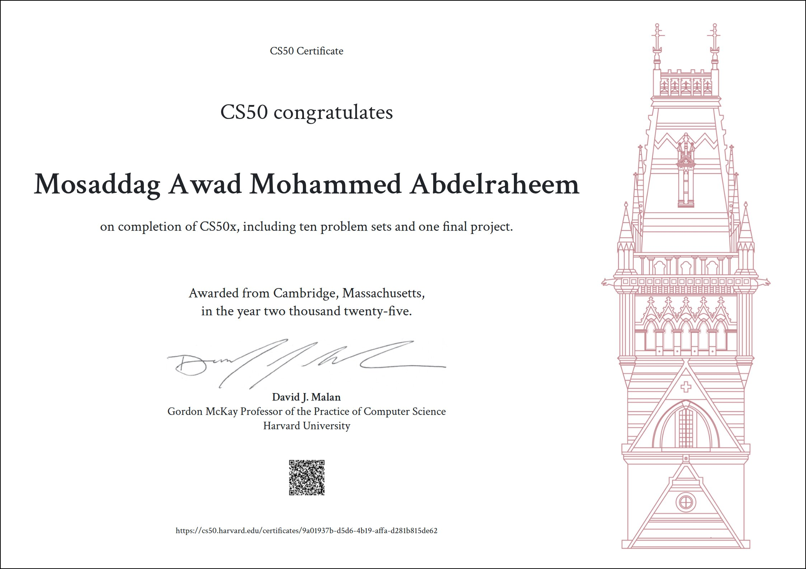
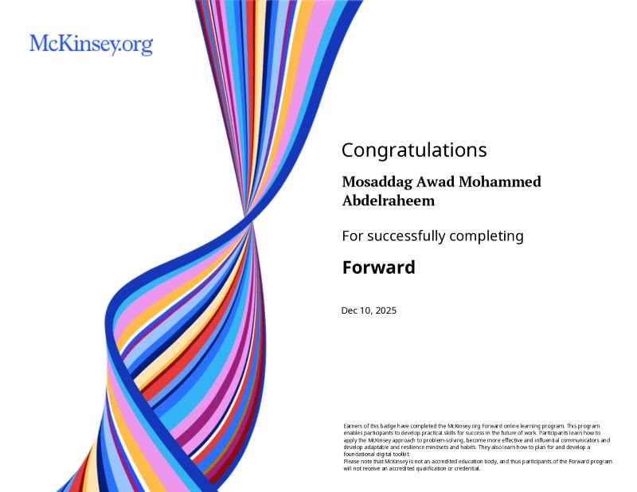

GCI World (Global Consumer Intelligence) – April 2026
The University of Tokyo · Aug 2026
DATA ANALYST · BUSINESS INTELLIGENCE · BUSINESS ANALYSIS
Turning data into insights and using technology to solve business problems.
A Civil Engineering and Business Administration graduate focused on data analytics and business intelligence, using SQL, Power BI and Excel to turn data into clear insights that support better decisions.
01 / ABOUT
I hold a BSc in Civil Engineering and a BSc in Business Administration (Magna Cum Laude), and I now focus on Data Analytics and Business Intelligence. My engineering background gave me structured problem-solving, attention to detail, and the ability to work under pressure, and my business degree gives me the context to link data to decisions.
I focus on turning data into clear insights that support decision-making, using SQL, Power BI and Excel to analyze datasets and build dashboards. I keep strengthening these skills through certifications and practical projects, and I am looking for Data Analyst, Business Analyst and BI roles.
02 / CAPABILITIES
03 / CREDENTIALS
The professional certificates most relevant to data analytics, business intelligence and business analysis.

The University of Tokyo · Aug 2026

Harvard University · Oct 2025

McKinsey & Company · Dec 2025
IBM · Apr 2026
IBM · Sep 2025
Google · Dec 2025
Google · Dec 2025
IBM · Dec 2025
IBM · Dec 2025
04 / SELECTED WORK
Practical projects in data analytics and business intelligence will be showcased here.
One or two sentences: the problem, what you built, and the outcome.
View on GitHub ↗One or two sentences: the problem, what you built, and the outcome.
View on GitHub ↗05 / EXPERIENCE
McKinsey.org · Remote
UN Volunteers, Arab States · Remote
Al-Dar Engineering Company · Wad Madani, Sudan
06 / EDUCATION
University of the People · GPA 3.79 / 4.00 · Magna Cum Laude
University of Sinnar · Grade: B
07 / CONTACT
Open to Data Analyst, Business Analyst and BI roles where data-driven decisions matter.
Find me as @mosaddag on GitHub, LinkedIn and more.